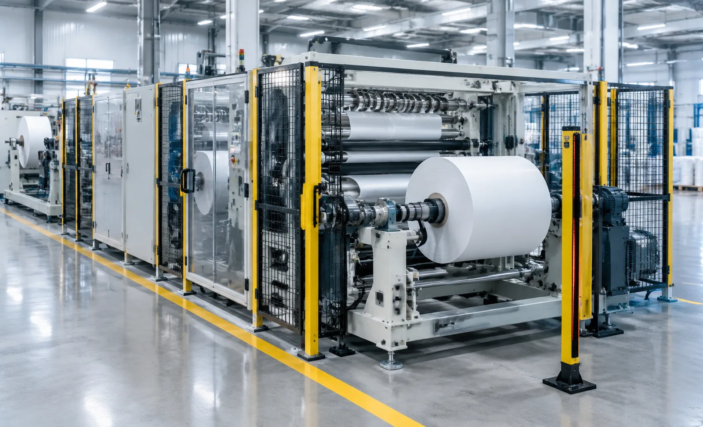
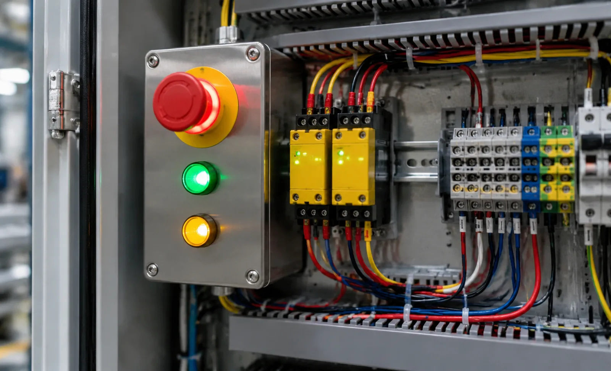

Published October 21, 2026 | By HDPTH Technical Editorial Team

Buyers interrogate slitter rewinders on knife systems, tension control and speed, and treat safety as a line item that arrives with the CE plate. Yet the interlock system decides how often operators face a running web, and whether an audit finds a machine you can defend. This guide turns that exposure into specified, testable safety functions.
Why the safety control system now leads the specification
Machinery Regulation (EU) 2023/1230, applicable to machines placed on the EU market from 20 January 2027, hardens the expectation that safety functions are engineered and verified as systems. The technical anchor is ISO 13849-1: every interlocked gate, light curtain and emergency stop is a safety function with a required Performance Level, built from sensing, logic and actuation with calculable reliability. A quotation that lists switches without stating categories, PL and diagnostics is selling hardware, not compliance. Make the safety system a documented chapter of the offer.
Safety functions and Performance Levels: setting the requirement
Start from the risk assessment under ISO 12100, then let ISO 13849-1 translate each risk into a PLr. On a slitter rewinder the recurring functions are predictable: interlocked access gates to the knife and nip zones, guard locking where run-down is long, and a light curtain at the rewind station. For hazards a person can reach quickly, this class of machinery typically resolves to Category 3, PL d — dual-channel sensing, monitored actuation, single-fault tolerance. Demand the PLr per named function, the achieved PL with its calculation, and component reliability data; a supplier unwilling to show the arithmetic shifts the risk onto you.
Interlocked access gates and guard locking
A movable guard is only as good as its interlock chain, and ISO 14119 governs the devices: coded, tamper-resistant switches rather than magnets a folded card can defeat, wired so opening or a broken actuator stops the machine. Guard locking goes further — it holds the door closed until the drive has run down to a safe state, measured rather than assumed. Ask what stops the machine when the gate opens (Category 0 immediate power removal, or Category 1 controlled stop), how long run-down takes at production speed, and whether the lock releases on confirmed safe speed or only a timer. Require an escape release inside the guard.
Light curtains, muting and safe threading
Where material is presented by hand, presence-sensing devices complement gates, and ISO 13855 fixes the minimum distance from curtain to hazard as a function of stopping time — a slow drive can make a curtain useless by placing it too close. Muting is the exception: at automatic threading and splice-table openings the web must pass through the field, so the stop is suspended for the material while people stay detected. Require muting sensors that detect the web itself, limits by time or position, and an approved muting lamp. A permanently muted curtain is a hole in the safeguard, not a feature.
Stop circuits and the architecture: safety relays or safety PLC
Every safety function ends in a stop, and IEC 60204-1 defines the categories: Category 0 removes power immediately, Category 1 brings the drive down in a controlled manner first. Hardwired safety relays remain fully valid for machines with a handful of functions. A safety PLC earns its cost when zones multiply, safety functions interact with recipes and drive speeds, diagnostics must be readable at the HMI, and the system will grow. Whichever is proposed, the criteria are identical: dual channels where the PLr demands, monitored feedback, stated diagnostic coverage, and safe communication to drives over a recognised profile.
Validation testing and documentation at FAT
ISO 13849-2 makes validation a defined activity, and the FAT is where you witness it. A credible protocol tests each safety function against its specification and injects faults: short a gate switch, defeat a lock actuator, block curtain beams, and confirm the machine responds and stays down. Time the guard locking sequence against measured run-down, and check stopping distances where a curtain is the barrier. Then collect the paper: the safety block diagram, the PL calculation per function, reliability data, a signed validation report, and electrical documentation matching the cabinet wiring.
What to write into the specification
- Each safety function named with its PLr and achieved PL under ISO 13849-1.
- Interlock devices compliant with ISO 14119, dual-channel wiring, monitored actuation.
- Guard locking release on confirmed safe speed, run-down measured at production speed.
- Light curtain placement per ISO 13855, muting limited by time or position with a muting lamp.
- Stop categories per IEC 60204-1, architecture stated — relays or safety PLC — with diagnostics.
- FAT validation per ISO 13849-2 including fault injection, signed report delivered.

Safety interlocks work together with the physical safeguarding package, so read this guide with our machine safety guarding buyer’s guide and our EU Machinery Regulation 2023/1230 buyer’s guide, and see how validated safety is built into our high-speed slitting machines.
Specifying a new machine or retrofit?
Send HDPTH your material range, roll sizes and safety requirements. We will document the interlock system — safety functions, performance levels, guard locking and the FAT validation protocol — in the offer itself.
Submit Your Project InquiryQuestions to put to every vendor
- What PLr and achieved PL apply to each safety function, and where is the calculation?
- How is each gate interlocked, and does guard locking release on safe speed or a timer?
- Where are curtains positioned, how is muting arranged, and what prevents permanent muting?
- Which faults will you inject at FAT, and is the validation report part of delivery?
Frequently asked questions
What Performance Level should a slitter rewinder safety function target?
The Performance Level is derived from the risk assessment, not chosen from a catalogue. For hazards reached through an access gate, such as nip points and the knife zone, assessments on converting machinery typically land at Category 3, PL d: dual-channel sensing, monitored actuation, single-fault tolerance. Accept a stated PLr per function, not a vague claim of CE marking.
Do I need a safety PLC or are safety relays enough?
Hardwired safety relays remain valid for machines with few functions and no zoning. A safety PLC earns its cost when you have multiple guarded zones, safety functions that interact with recipes and drive speeds, diagnostics readable on the HMI, and room to expand later. Judge it on the number of safety functions and the diagnostic coverage required, not the technology’s prestige.
What is guard locking and when is it required on a slitter rewinder?
Guard locking holds the access door mechanically closed until the hazardous motion has stopped, instead of merely stopping the drive when the door opens. It is required whenever run-down exceeds the time a person needs to reach the danger, or where stored energy could cause unexpected motion. Specify the locking principle, the escape release and a release condition based on confirmed safe speed, not a timer alone.
What is muting and when does a slitter rewinder need it?
Muting suspends the stop function of a light curtain so material can pass while people remain detected. On slitter rewinders it appears at automatic threading and splice-table openings, where the web must travel through a sensing field. Muting must use sensors that detect the material, be limited by time or position, and signalled by an approved muting lamp — a permanently muted curtain is a gap, not a feature.
How is a safety system validated before machine acceptance?
Validation follows ISO 13849-2: each safety function is tested against its specification, including fault injection — shorting a sensor, defeating a lock, blocking curtain beams — to prove the diagnostic behaviour. At the FAT, watch the guard locking sequence timed against measured run-down and stop distances checked at production speed. The signed validation report belongs in the acceptance protocol, not in a conversation.
Sources
- ISO 13849-1: safety-related parts of control systems — design and Performance Levels
- ISO 13849-2: validation of safety-related parts of control systems
- ISO 14119: interlocking devices associated with guards
- ISO 13855: positioning of safeguards with respect to approach speeds
- Regulation (EU) 2023/1230 on machinery: essential health and safety requirements